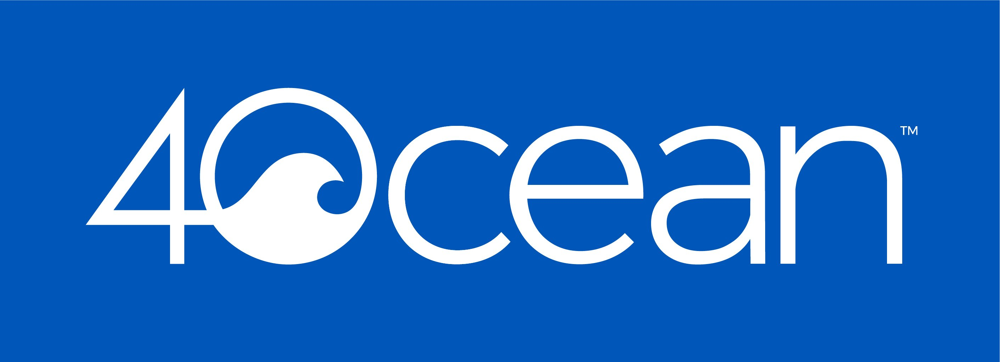

About Us

Mark Paparelli
As a result of growing up on the Bay my passion for the saltwater is unparalleled.
Qualifications Include:
- 48 years of saltwater experience primarily in RI, MA and CT
- USCG Captain
- Transit Worker Identification Card – FBI Background check
- Certified in First Aid, CPR and AED
- RISAA Angler of the year
- Previous RISAA Tournaments Chairperson
- Commercial Fishing License
- USMF Commercial Pelagic License with Shark Endorsement
- Member of RISAA
- Member of Save the Bay
- Supporter of 4Oceans

Kyle Paparelli
Kyle is the future of sport fishing and is a force to be reckoned with. At age 5 he started to fish and as they say the rest is history. The experience he gained was through fishing with some of the states best Charter Captains, commercial fisherman but most of all through his own technique. He has placed in and won cash tournaments, achieved RISAA Angler of the year for 5 Years, Hall of Fame fish, Speaker at Fishing shows and many appearances in popular magazines such as The Fisherman, On the Water and Sport fishing. He has landed trophy tuna (Bluefin, yellow fin and big eye), mahi, albacore, pelagic sharks and White Marlin. His passion is Bluefin tuna fishing off Cape Cod on top, jigging and using live bait.
Additionally he has mastered the more popular inshore species and even fresh water game. Currently he is attending URI Marine Fisheries Program and working for Greenfin attempting to raise breed pelagic fish (yellow fin and mahi) in captivity.
See Kyle on YouTube in the new "2020 Shimano Stella SW" video.
See Kyle on YouTube in the new "2020 Shimano Stella SW" video.
Katie Paparelli
Katie is the focused one of the team keeping us organized and safe. At an early age Katie was introduced to saltwater and enjoys boating and fishing. Her passion is sports and has played ice hockey, field hockey, softball and lacrosse during her school years. Continuing this competitive and athletic spirit she is now playing hockey for the URI Women’s Hockey Team. Katie supports teaching the younger age groups, boat dock training (docking center consoles) and safety compliance. Her hard work and focus has earned her internships with the Newport Police, State Police and Narragansett Police